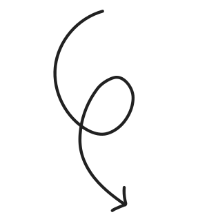
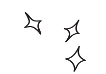

BRINGING AN E-BAY SHOP TO THE NEXT LEVEL.
Morokk SNKRS
Role:
Team:
Duration:
e-commerce
responsive design
Alicia Piqueras, Fernanda Thieme, Sam Tyson
2 weeks

“A true sneakerhead is somebody that really loves the shoe. They are passionate and can tell you a story about it”
PROBLEM
- E-Bay as a selling platform is not always percieved as safe and secured for people searching for gems in the sneakers' collectors industry.
- Competitive market with international websites making millions of revenue.
GOAL
- Positioning a small businness in a extremely competitive market that is worth billions of dollars.
- Create an easy challenge of communication between customer-owner to build trust.
SOLUTION
- Keep it simple. Reinforce the fact that the stock is exclusive and the client won’t have to spend hours digging in the website to see what there’s in stock.
- Have every single item listed individually, with its own characteristics and sizes.
- Stablish an easy communicaction channel with the owner of MOROKK
What Morokk SNKRS is?
Morokk SNKRS was bornt a small space for sneaker enthusiasts who don’t have the resources or time to find the ideal offer on platforms like eBay Kleinanzeigen every single time. The project started as an Instagram account, and is gradually growing in popularity.
As a passionate sneaker enthusiast myself, I have always found it difficult to find exclusive pieces in conventional stores. When it comes to buying from individuals, doubts would flood my mind: “Are they authentic? Will they be used? Will I receive the original product or will it be a scam?” These uncertainties prevented me from venturing into buying sneakers from any market that wasn’t “official.”
When the owner Sergio told us he was going to turn our passion for sneakers into his profession, and start a business selling limited-edition sneakers at competitive prices, it was clear to us: we had to join him in this process and together create what we had been searching for all this time.
Research
“Our stock is not limited, it is exclusive”
User Persona

User Journey
Morokk Snkrs needs an online shop that communicates passion for sneakers and trustworthiness to compete on an unregulated market catering to passionate shoppers.
What we wanted
Branding perspective
purple must be a color
retro vibes
keep it simple
tell Sergio's story
UX/UI perspective
accurate descriptions
easy communication with seller
secure payment
mobile web
Sergio had an emotional connection with this colors, so it was important to use them, at least for the
branding.
However, the website was asking for more vibrant shades of purple.
First prototype and usability testing
Next steps
- Rebuild Product cards: using sets of components, autolayout and styles and standarize the PDPs for both desktop and mobile versions.
- Develop the contact page to build an easy channel of communication between Morokk SNKRS and client.
- Create a more solid design system in order to easily prototipe the rest of the screens.
- Take real pictures of the stock and implement different angles of vie in the PDPs.


Takeaways
Build elements from small to big
Pay attention and build a solid mid fi to identify different elements and being able to create a design system before jumping to high fidelity
Although iterations recieved a good Feedback and the workflow was pretty straightforward and simple, we focused more on the aesthetics of the website than in developing what would be the strongest feature of this product: the easy channel of communication with the seller, so we should have focused better in this workflow.